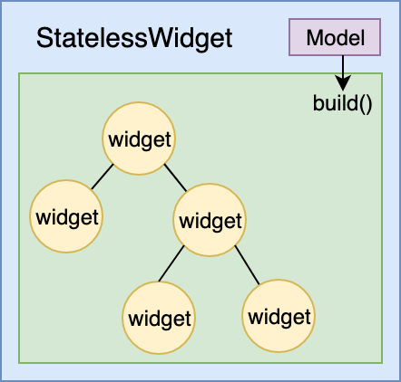
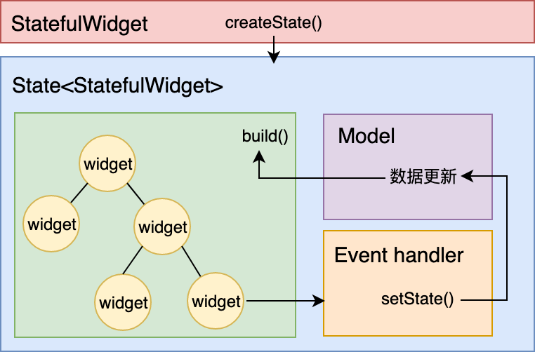

你好，我是陈航。
通过上一篇文章，我们已经深入理解了 Widget 是 Flutter 构建界面的基石，也认识了 Widget、Element、RenderObject 是如何互相配合，实现图形渲染工作的。Flutter 在底层做了大量的渲染优化工作，使得我们只需要通过组合、嵌套不同类型的 Widget，就可以构建出任意功能、任意复杂度的界面。
同时，我们通过前面的学习，也已经了解到 Widget 有 StatelessWidget 和 StatefulWidget 两种类型。StatefulWidget 应对有交互、需要动态变化视觉效果的场景，而 StatelessWidget 则用于处理静态的、无状态的视图展示。StatefulWidget 的场景已经完全覆盖了 StatelessWidget，因此我们在构建界面时，往往会大量使用 StatefulWidget 来处理静态的视图展示需求，看起来似乎也没什么问题。
那么，StatelessWidget 存在的必要性在哪里？StatefulWidget 是否是 Flutter 中的万金油？在今天这篇文章中，我将着重和你介绍这两种类型的区别，从而帮你更好地理解 Widget，掌握不同类型 Widget 的正确使用时机。
UI 编程范式
要想理解 StatelessWidget 与 StatefulWidget 的使用场景，我们首先需要了解，在 Flutter 中，如何调整一个控件（Widget）的展示样式，即 UI 编程范式。
如果你有过原生系统（Android、iOS）或原生 JavaScript 开发经验的话，应该知道视图开发是命令式的，需要精确地告诉操作系统或浏览器用何种方式去做事情。比如，如果我们想要变更界面的某个文案，则需要找到具体的文本控件并调用它的控件方法命令，才能完成文字变更。
下述代码分别展示了在 Android、iOS 及原生 Javascript 中，如何将一个文本控件的展示文案更改为 Hello World：
// Android 设置某文本控件展示文案为 Hello WorldTextView textView = (TextView) findViewById(R.id.txt);textView.setText("Hello World"); // iOS 设置某文本控件展示文案为 Hello WorldUILabel *label = (UILabel *)[self.view viewWithTag:1234];label.text = @"Hello World"; // 原生 JavaScript 设置某文本控件展示文案为 Hello Worlddocument.querySelector("#demo").innerHTML = "Hello World!";与此不同的是，Flutter 的视图开发是声明式的，其核心设计思想就是将视图和数据分离，这与 React 的设计思路完全一致。
对我们来说，如果要实现同样的需求，则要稍微麻烦点：除了设计好 Widget 布局方案之外，还需要提前维护一套文案数据集，并为需要变化的 Widget 绑定数据集中的数据，使 Widget 根据这个数据集完成渲染。
但是，当需要变更界面的文案时，我们只要改变数据集中的文案数据，并通知 Flutter 框架触发 Widget 的重新渲染即可。这样一来，开发者将无需再精确关注 UI 编程中的各个过程细节，只要维护好数据集即可。比起命令式的视图开发方式需要挨个设置不同组件（Widget）的视觉属性，这种方式要便捷得多。
总结来说，命令式编程强调精确控制过程细节；而声明式编程强调通过意图输出结果整体。对应到 Flutter 中，意图是绑定了组件状态的 State，结果则是重新渲染后的组件。在 Widget 的生命周期内，应用到 State 中的任何更改都将强制 Widget 重新构建。
其中，对于组件完成创建后就无需变更的场景，状态的绑定是可选项。这里“可选”就区分出了 Widget 的两种类型，即：StatelessWidget 不带绑定状态，而 StatefulWidget 带绑定状态。当你所要构建的用户界面不随任何状态信息的变化而变化时，需要选择使用 StatelessWidget，反之则选用 StatefulWidget。前者一般用于静态内容的展示，而后者则用于存在交互反馈的内容呈现中。
接下来，我分别和你介绍 StatelessWidget 和 StatefulWidget，从源码分析它们的区别，并总结一些关于 Widget 选型的基本原则。
StatelessWidget
在 Flutter 中，Widget 采用由父到子、自顶向下的方式进行构建，父 Widget 控制着子 Widget 的显示样式，其样式配置由父 Widget 在构建时提供。
用这种方式构建出的 Widget，有些（比如 Text、Container、Row、Column 等）在创建时，除了这些配置参数之外不依赖于任何其他信息，换句话说，它们一旦创建成功就不再关心、也不响应任何数据变化进行重绘。在 Flutter 中，这样的 Widget 被称为 StatelessWidget（无状态组件）。
这里有一张 StatelessWidget 的示意图，如下所示：

接下来，我以 Text 的部分源码为例，和你说明 StatelessWidget 的构建过程。
class Text extends StatelessWidget { // 构造方法及属性声明部分 const Text(this.data, { Key key, this.textAlign, this.textDirection, // 其他参数 ... }) : assert(data != null), textSpan = null, super(key: key); final String data; final TextAlign textAlign; final TextDirection textDirection; // 其他属性 ... @override Widget build(BuildContext context) { ... Widget result = RichText( // 初始化配置 ... ) ); ... return result; }}可以看到，在构造方法将其属性列表赋值后，build 方法随即将子组件 RichText 通过其属性列表（如文本 data、对齐方式 textAlign、文本展示方向 textDirection 等）初始化后返回，之后 Text 内部不再响应外部数据的变化。
那么，什么场景下应该使用 StatelessWidget 呢？
这里，我有一个简单的判断规则：父 Widget 是否能通过初始化参数完全控制其 UI 展示效果？如果能，那么我们就可以使用 StatelessWidget 来设计构造函数接口了。
我准备了两个简单的小例子，来帮助你理解这个判断规则。
第一个小例子是，我需要创建一个自定义的弹窗控件，把使用 App 过程中出现的一些错误信息提示给用户。这个组件的父 Widget，能够完全在子 Widget 初始化时将组件所需要的样式信息和错误提示信息传递给它，也就意味着父 Widget 通过初始化参数就能完全控制其展示效果。所以，我可以采用继承 StatelessWidget 的方式，来进行组件自定义。
第二个小例子是，我需要定义一个计数器按钮，用户每次点击按钮后，按钮颜色都会随之加深。可以看到，这个组件的父 Widget 只能控制子 Widget 初始的样式展示效果，而无法控制在交互过程中发生的颜色变化。所以，我无法通过继承 StatelessWidget 的方式来自定义组件。那么，这个时候就轮到 StatefulWidget 出场了。
StatefulWidget
与 StatelessWidget 相对应的，有一些 Widget（比如 Image、Checkbox）的展示，除了父 Widget 初始化时传入的静态配置之外，还需要处理用户的交互（比如，用户点击按钮）或其内部数据的变化（比如，网络数据回包），并体现在 UI 上。
换句话说，这些 Widget 创建完成后，还需要关心和响应数据变化来进行重绘。在 Flutter 中，这一类 Widget 被称为 StatefulWidget（有状态组件）。这里有一张 StatefulWidget 的示意图，如下所示：

看到这里，你可能有点困惑了。因为，我在上一篇文章“Widget，构建 Flutter 界面的基石”中和你分享到，Widget 是不可变的，发生变化时需要销毁重建，所以谈不上状态。那么，这到底是怎么回事呢？
其实，StatefulWidget 是以 State 类代理 Widget 构建的设计方式实现的。接下来，我就以 Image 的部分源码为例，和你说明 StatefulWidget 的构建过程，来帮助你理解这个知识点。
和上面提到的 Text 一样，Image 类的构造函数会接收要被这个类使用的属性参数。然而，不同的是，Image 类并没有 build 方法来创建视图，而是通过 createState 方法创建了一个类型为 _ImageState 的 state 对象，然后由这个对象负责视图的构建。
这个 state 对象持有并处理了 Image 类中的状态变化，所以我就以 _imageInfo 属性为例来和你展开说明。
_imageInfo 属性用来给 Widget 加载真实的图片，一旦 State 对象通过 _handleImageChanged 方法监听到 _imageInfo 属性发生了变化，就会立即调用 _ImageState 类的 setState 方法通知 Flutter 框架：“我这儿的数据变啦，请使用更新后的 _imageInfo 数据重新加载图片！”。而，Flutter 框架则会标记视图状态，更新 UI。
class Image extends StatefulWidget { // 构造方法及属性声明部分 const Image({ Key key, @required this.image, // 其他参数 }) : assert(image != null), super(key: key); final ImageProvider image; // 其他属性 ... @override _ImageState createState() => _ImageState(); ...} class _ImageState extends State<Image> { ImageInfo _imageInfo; // 其他属性 ... void _handleImageChanged(ImageInfo imageInfo, bool synchronousCall) { setState(() { _imageInfo = imageInfo; }); } ... @override Widget build(BuildContext context) { final RawImage image = RawImage( image: _imageInfo?.image, // 其他初始化配置 ... ); return image; } ...}可以看到，在这个例子中，Image 以一种动态的方式运行：监听变化，更新视图。与 StatelessWidget 通过父 Widget 完全控制 UI 展示不同，StatefulWidget 的父 Widget 仅定义了它的初始化状态，而其自身视图运行的状态则需要自己处理，并根据处理情况即时更新 UI 展示。
好了，至此我们已经通过 StatelessWidget 与 StatefulWidget 的源码，理解了这两种类型的 Widget。这时，你可能会问，既然 StatefulWidget 不仅可以响应状态变化，又能展示静态 UI，那么 StatelessWidget 这种只能展示静态 UI 的 Widget，还有存在的必要吗？
StatefulWidget 不是万金油，要慎用
对于 UI 框架而言，同样的展示效果一般可以通过多种控件实现。从定义来看，StatefulWidget 仿佛是万能的，替代 StatelessWidget 看起来合情合理。于是 StatefulWidget 的滥用，也容易因此变得顺理成章，难以避免。
但事实是，StatefulWidget 的滥用会直接影响 Flutter 应用的渲染性能。
接下来，在今天这篇文章的最后，我就再带你回顾一下 Widget 的更新机制，来帮你意识到完全使用 StatefulWidget 的代价：
Widget 是不可变的，更新则意味着销毁 + 重建（build）。StatelessWidget 是静态的，一旦创建则无需更新；而对于 StatefulWidget 来说，在 State 类中调用 setState 方法更新数据，会触发视图的销毁和重建，也将间接地触发其每个子 Widget 的销毁和重建。
那么，这意味着什么呢？
如果我们的根布局是一个 StatefulWidget，在其 State 中每调用一次更新 UI，都将是一整个页面所有 Widget 的销毁和重建。
在上一篇文章中，我们了解到，虽然 Flutter 内部通过 Element 层可以最大程度地降低对真实渲染视图的修改，提高渲染效率，而不是销毁整个 RenderObject 树重建。但，大量 Widget 对象的销毁重建是无法避免的。如果某个子 Widget 的重建涉及到一些耗时操作，那页面的渲染性能将会急剧下降。
因此，正确评估你的视图展示需求，避免无谓的 StatefulWidget 使用，是提高 Flutter 应用渲染性能最简单也是最直接的手段。
在接下来的第 29 篇文章“为什么需要做状态管理，怎么做？”中，我会继续带你学习 StatefulWidget 常见的几种状态管理方法，与你更为具体地介绍在不同场景中，该选用何种 Widget 的基本原则。这些原则，你都可以根据实际需要应用到后续工作中。
总结
好了，今天关于 StatelessWidget 与 StatefulWidget 的介绍，我们就到这里了。我们一起来回顾下今天的主要知识点。
首先，我带你了解了 Flutter 基于声明式的 UI 编程范式，并通过阅读两个典型 Widget（Text 与 Image）源码的方式，与你一起学习了 StatelessWidget 与 StatefulWidget 的基本设计思路。
由于 Widget 采用由父到子、自顶向下的方式进行构建，因此在自定义组件时，我们可以根据父 Widget 是否能通过初始化参数完全控制其 UI 展示效果的基本原则，来判断究竟是继承 StatelessWidget 还是 StatefulWidget。
然后，针对 StatefulWidget 的“万金油”误区，我带你重新回顾了 Widget 的 UI 更新机制。尽管 Flutter 会通过 Element 层去最大程度降低对真实渲染视图的修改，但大量的 Widget 销毁重建无法避免，因此避免 StatefulWidget 的滥用，是最简单、直接地提升应用渲染性能的手段。
需要注意的是，除了我们主动地通过 State 刷新 UI 之外，在一些特殊场景下，Widget 的 build 方法有可能会执行多次。因此，我们不应该在这个方法内部，放置太多有耗时的操作。而关于这个 build 方法在哪些场景下会执行，以及为什么会执行多次，我会在下一篇文章“提到生命周期，我们是在说什么？”中，与你一起详细分析。
思考题
Flutter 工程应用模板是计数器示例应用 Demo，这个 Demo 的根节点是一个 StatelessWidget。请在保持原有功能的情况下，将这个 Demo 改造为根节点为 StatefulWidget 的 App。你能通过数据打点，得出这两种方式的性能差异吗？
欢迎你在评论区给我留言分享你的观点，我会在下一篇文章中等待你！感谢你的收听，也欢迎你把这篇文章分享给更多的朋友一起阅读。

COMMUNITY NOTES
读者评论
就喜欢这种讲解加举例的方式，非常清晰
简单来说StatelessWidget就是为了提升性能而被设计出来，而完全使用StatefulWidget可能对性能有影响，所以在使用前一定要评估一下用哪个比较合适，这样理解对吗？
学到现在，真的是受益匪浅，之前的一些疑惑都从中得到了答案，有种恍然大悟的感觉，希望老师能在未来的学习中，分享一下 Flutter 的从业情况和面试题，感谢之至。
思考题里面是将MyApp 替换成StatefulWidget，然后需要在点击FloatingActionButton 的时候更新MyApp 的State 么？这样需要将MyApp 的State 一直传递到_MyHomePageState？
清楚明白